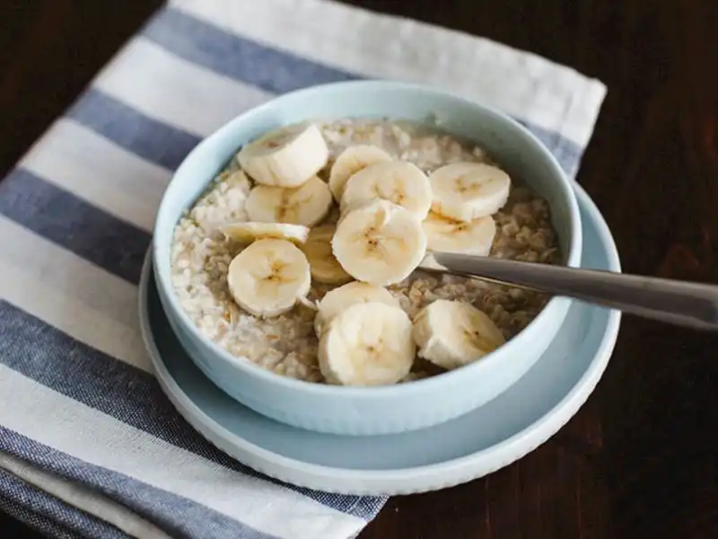
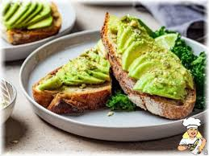
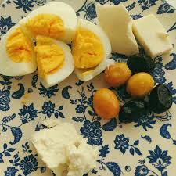

Hafif Kilolu Bireyler İçin Kahvaltı Diyet Programı
1. Yulaf Ezmesi ve Süt
Malzemeler:
- 3 yemek kaşığı yulaf ezmesi
- 1 su bardağı süt (yağsız veya yarım yağlı)
- 1 tatlı kaşığı bal
- 1 çay kaşığı tarçın
- 1/2 muz, dilimlenmiş
Hazırlık:
Yulaf ezmesini bir kaba alıp sütle karıştırın. Karışımı bir mikrodalga veya ocakta ısıtarak pişirin. Üzerine tarçın, bal ve dilimlenmiş muz ekleyin.

2. Avokado ve Tam Buğday Ekmeği
Malzemeler:
- 1 dilim tam buğday ekmeği
- Yarım avokado (ezilmiş)
- 1 tatlı kaşığı zeytinyağı
- Birkaç dilim cherry domates
- Taze çekilmiş karabiber
Hazırlık:
Tam buğday ekmeğini tost yapın. Üzerine ezilmiş avokadoyu sürüp, zeytinyağını gezdirin. Domates dilimlerini ekleyip üzerine karabiber serpin.

3. Haşlanmış Yumurta ve Zeytin
Malzemeler:
- 2 adet haşlanmış yumurta
- 5-6 adet yeşil veya siyah zeytin
- 1 küçük tabak taze sebzeler (salatalık, domates, marul)
Hazırlık:
Yumurtaları haşlayın ve dilimleyin. Yanında zeytin ve sebzelerle dengeli bir öğün oluşturun.
